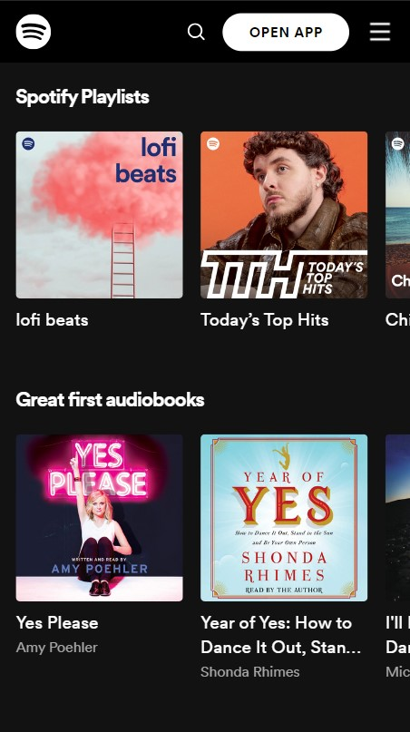

WDD 230: Web Frontend Development
PARC: Proximity (Amazon)

Elements that are related should be placed close to each other to visually group them.
Amazon demonstrates this with their nav bar. The nav bar has a lot of added content, but organizes the links in a much more managable way.
PARC: Alignment (Google)
Hicks Law (Spotify)

Hick's Law states that the time it takes for a person to make a decision increases with the number of choices available. In web design, this principle suggests that reducing the number of options or presenting choices in a more organized manner can improve user decision-making and navigation efficiency.
Spotify demonstrates this with their home page. The nav bar does not have a lot of options which prioritizes their music and can speed up the decision time of the user.